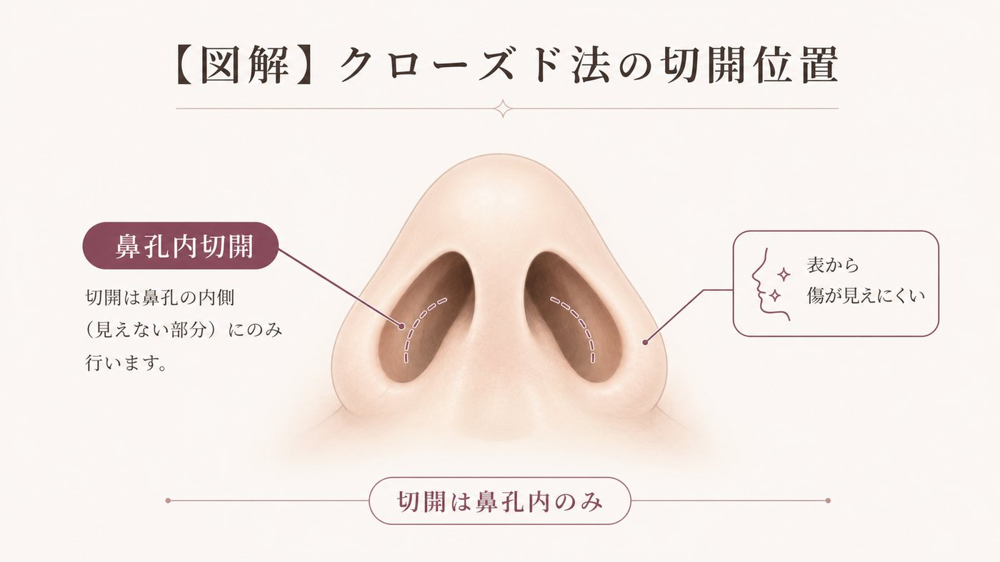

Section 01
そもそも「クローズド法」とは？
クローズド法とは、鼻の穴の内側だけを切開して行う鼻整形の手術方法です。切開が鼻孔の中で完結するため、施術後も顔の表側に傷跡が見えにくいのが特長です。
鼻先を整える鼻尖形成、鼻筋を通す隆鼻術、鼻先を伸ばす鼻中隔延長など、多くの施術がクローズド法で行えます。一方、鼻の穴と穴のあいだ（鼻柱＝びちゅう）の皮膚も切開し、鼻の中を大きく開いて行うのが「オープン法」です。どちらが優れているという単純な話ではなく、目指す変化とお悩みによって使い分けるものと考えてください。

Section 02
オープン法との違い（比較表）
クローズド法とオープン法の違いを、検討時に気になるポイントで並べました。
| 比較項目 | クローズド法 | オープン法 |
|---|---|---|
| 切開する場所 | 鼻の穴の中のみ | 鼻の穴の中＋鼻柱（皮膚） |
| 表側の傷跡 | 外側を切らないため残らない | 鼻柱に残る（親密な距離で目立つことがある） |
| 手術の視野 | 鼻孔内から操作（術野は限定的） | 鼻柱を開いて大きく展開できる |
| ダウンタイム傾向 | 比較的短め | やや長め |
| 向いている人 | 傷を残したくない・ダウンタイムを抑えたい | 再手術・強い曲がりの矯正・複雑な修正 |

Section 03
クローズド法のメリット
最大の利点は「表に傷跡が見えにくい」こと。加えてダウンタイムの短さ、仕上がりの安定という技術的な利点もあります。
傷跡が表から見えにくい
切開が鼻の穴の中だけで完結すること。オープン法では鼻柱（鼻の下）の傷が親密な距離で目立つことがありますが、クローズド法は外側の皮膚を切らないため、表から傷跡が見えにくいのが特長です。「整形したと気づかれたくない」という方に特に向いています。
ダウンタイムが比較的短い傾向
鼻柱を切開しない分、腫れや内出血が引くのが早い傾向があります（施術内容によります）。仕事や学校を長く休みにくい方にも選ばれています。
仕上がりが安定しやすい
皮膚を大きく開かないため、縫合時のテンション（張り）の影響を受けにくく、術中に作った形を最終的な仕上がりまで保ちやすいのが技術的な利点です。腫れの出方も抑えやすく、術直後の見た目にまでこだわって仕上げられます。
Section 04
向かないケース・注意点
クローズド法はメリットの多い方法ですが、鼻の状態によってはオープン法のほうが適するケースもあります。事前に知っておきたいポイントです。
クローズド法の注意点
- 複雑な修正・著しい変形：広い術野を確保できるオープン法が向くことがある
- 医師の技術差が出やすい：限られた視野で正確に操作するため、術者の経験と技術が仕上がりを左右する
- 再手術・強い曲がりの矯正：方法の見極めがより重要になる
- 適応はカウンセリングで判断：クローズドでできるかは鼻の状態しだい
ただし「クローズド法では大きな変化は無理」と決めつける必要はありません。近年は器具の進化で対応範囲が広がっており、内視鏡の併用で視野を広げ、肋軟骨を用いた全自家組織の鼻整形など変化量の大きい施術もクローズド法で可能です。
軟骨（グラフト）の選択で妥協しない
鼻先を下方向に伸ばす鼻中隔延長など、しっかりした土台が必要な施術では、本来は強度のある自分の肋軟骨（ろくなんこつ）が適するケースがあります。ところが肋軟骨の採取には技術を要するため、採取できない医師が扱いやすい耳介軟骨で代用したり、保存軟骨（寄贈された他人の軟骨）を第一選択にすることもあります。
当院の羽根医師は自家肋軟骨の採取に対応できるため、素材の選択肢に制約がありません。手技の都合で代用品に頼るのではなく、その症例に本当に適した素材を基準に選べます。まずは患者さん自身の組織（自家組織）を第一に検討し、必要な強度や量に応じて最適なグラフトをご提案します。※ どの素材にもメリット・注意点があり、最終的な選択は診察のうえで決定します。

Section 05
お悩み別・受けられる施術と症例
鼻整形は単独ではなく、複数の術式を組み合わせて鼻先の高さ・細さ・角度をまとめて整えるのが基本です。いずれもクローズド法で対応します。各症例はタブで正面・斜め・横を切り替えられます。
お悩み①：団子鼻（鼻先の丸み）
鼻先が丸く見える団子鼻は、鼻尖形成だけで解消できることはほとんどありません。当院ではクローズド法で、鼻尖形成・軟骨移植・ストラット（鼻先を支える土台）を組み合わせて、鼻先の高さと細さを土台から整えます。
症例｜団子鼻（鼻先の丸み）／クローズド法：鼻尖形成＋軟骨移植＋ストラット

images/case-dango-front.jpg

images/case-dango-oblique.jpg

images/case-dango-side.jpg
- 施術内容
- クローズド法による鼻尖形成＋軟骨移植＋ストラット（団子鼻の改善）
- 料 金
- ¥580,000〜（構成により変動）
- 主なリスク・副作用
- 腫れ・内出血・左右差・感染・仕上がりの個人差 等
- ダウンタイム
- 約1〜2週間（写真は術後3ヶ月）
※ 正面・斜め・横の3方向を掲載。10代の患者様（保護者同意のうえ掲載／プライバシー保護のため目元を加工）。効果には個人差があり、リスク・副作用を伴います。自由診療（保険適用外）。
お悩み②：鼻筋の低さ（鼻筋を通したい）
鼻筋を通しつつ鼻先も整えたい場合は、クローズド法で、鼻尖形成・軟骨移植・ストラットに、隆鼻（自家組織またはプロテーゼ）を組み合わせます。鼻筋を高くする素材は自家組織（耳介軟骨など）とプロテーゼがあり、鼻の状態やご希望に合わせて選びます。※ 下の症例では自家組織（耳介軟骨）を使用しています。
症例｜鼻筋の低さ／クローズド法：鼻尖形成＋軟骨移植＋ストラット＋自家組織隆鼻（耳介軟骨）

images/case-ryubi-front.jpg

images/case-ryubi-oblique.jpg

images/case-ryubi-side.jpg
- 施術内容
- クローズド法による鼻尖形成＋軟骨移植＋ストラット＋自家組織隆鼻（耳介軟骨）
- 料 金
- ¥780,000〜（構成により変動）
- 主なリスク・副作用
- 腫れ・内出血・左右差・感染・仕上がりの個人差 等
- ダウンタイム
- 約1〜2週間（写真は術後1週間）
※ 正面・斜め・横の3方向を掲載。20代の患者様（同意のうえ掲載／プライバシー保護のため目元を加工）。効果には個人差があり、リスク・副作用を伴います。自由診療（保険適用外）。
お悩み③：鼻先を高く・前に出したい
鼻先をしっかり高く前へ出したい場合は、クローズド法で、鼻尖形成・軟骨移植・鼻中隔延長・プロテーゼなどを組み合わせ、土台から立体的にデザインします。※ 鼻翼縮小は鼻先を高くするために必須の施術ではありません。下の症例では、あわせて鼻翼縮小も行っています。
症例｜鼻先を高く／クローズド法：鼻尖形成＋軟骨移植＋鼻中隔延長（耳介軟骨）＋プロテーゼ＋鼻翼縮小

images/case-tiplift-front.jpg

images/case-tiplift-oblique.jpg

images/case-tiplift-side.jpg
- 施術内容
- クローズド法による鼻尖形成＋軟骨移植＋鼻中隔延長（耳介軟骨）＋プロテーゼ＋鼻翼縮小
- 料 金
- ¥1,080,000〜（構成により変動）
- 主なリスク・副作用
- 腫れ・内出血・左右差・感染・プロテーゼの位置ずれ・仕上がりの個人差 等
- ダウンタイム
- 約1〜2週間（写真は術後1ヶ月）
※ 正面・斜め・横の3方向を掲載。30代の患者様（同意のうえ掲載／プライバシー保護のため目元を加工）。効果には個人差があり、リスク・副作用を伴います。自由診療（保険適用外）。
Section 06
費用（料金プラン）
当院はセット料金です。「ベースプラン」に必要な「オプション」を加えて総額が決まります（クローズド法・オープン法 共通）。代表的な施術の料金です（税込・自由診療）。
| ストラット 鼻尖形成・軟骨移植を含む | ¥580,000〜月々 ¥9,700〜 |
|---|---|
| 鼻中隔延長（耳介軟骨） | ¥880,000〜月々 ¥14,700〜 |
| 鼻中隔延長（肋軟骨併用） | ¥1,100,000〜月々 ¥18,300〜 |
| 隆鼻術（自家組織） | ¥330,000〜月々 ¥5,500〜 |
| 隆鼻術（プロテーゼ） | ¥242,000〜月々 ¥4,000〜 |
料金についての注意事項
Section 07
ダウンタイムと経過
ダウンタイムは施術内容によって異なります。予定を立てる際の目安にしてください（経過には個人差があります）。
| 施術 | 腫れ・内出血の目安 | 固定・抜糸 |
|---|---|---|
| ストラット | 1〜2週間で落ち着く | ギプス固定・約7日で抜糸 |
| 鼻中隔延長（耳介軟骨） | 1〜2週間で落ち着く | ギプス固定・約7日で抜糸 |
| 鼻中隔延長（肋軟骨併用） | 1〜2週間で落ち着く | ギプス固定・約7日で抜糸 |
| 隆鼻術 | 1〜2週間で落ち着く | ギプス固定・約7日で抜糸 |
Section 08
リスク・副作用について
鼻整形は医療行為であり、クローズド法でも以下のようなリスク・副作用が生じる可能性があります。必ずご確認ください。
主なリスク・副作用
- 腫れ・内出血・痛み・むくみ（時間の経過とともに軽快することが多い）
- 左右差、仕上がりのイメージとの違い
- 感染、鼻の穴の中の傷・つっぱり感、しびれ・知覚の変化
- プロテーゼの位置のずれ・輪郭が目立つ・露出などの可能性
- 糸を使う施術では後戻りが生じる場合がある
Section 09
福岡でクリニック・医師を選ぶポイント
福岡（天神・博多エリア）には多くの美容クリニックがあります。後悔しないために、次の観点で比較しましょう。
クリニック選びのチェックポイント
- ① 鼻整形の症例数・専門性：鼻の症例が豊富か、クローズド法の経験が十分か
- ② できない場合も説明するか：オープン法が向くケースを正直に伝えてくれるか
- ③ デザインの提案力：顔全体のバランスを踏まえた提案があるか
- ④ 料金の明確さ：麻酔・アフターケア込みの総額を提示してくれるか
- ⑤ リスク説明の丁寧さ：メリットだけでなくリスクも説明してくれるか
- ⑥ アクセス・アフターフォロー：通いやすいか、術後の診察・保証はあるか
- ⑦ 症例写真を全方向で見せているか：正面・斜め・横の3方向をそろえて公開しているか
特に見落とされがちなのが、症例写真の「見せ方」です。鼻は立体的なパーツで、見る角度によって印象がまったく変わります。横顔や斜めだけを載せているクリニックもありますが、正面を含めた3方向で見て、はじめて本当の仕上がりが分かります。横から見て鼻先がつんとしていても正面から見ると鼻柱が見えていなかったり、逆に正面は綺麗でも横から見ると鼻先が垂れて見えたり——都合の良い角度だけを載せてそうした点を隠しているケースもあるのです。
Section 10
カウンセリング〜施術の流れ
初めての方も安心してご相談いただけるよう、次の流れでご案内しています。
- 無料カウンセリング予約（Web／お電話／LINE）
- 医師による診察・デザイン相談（お悩み・ご希望・骨格を確認し、クローズド法で対応できるか判断）
- 施術内容・費用・リスクのご説明（納得いただいてから決定）
- 施術
- アフターケア・経過観察
Section 11
よくある質問
クローズド法なら本当に傷は残りませんか？
切開は鼻の穴の内側だけで行うため、外側の皮膚は切らず、表からは傷跡が見えにくいのが特長です。穴の中には傷が生じますが、通常は時間の経過とともに目立ちにくくなります。傷の治り方には体質による個人差があります。
クローズド法とオープン法、どちらが良いのですか？
どちらが優れているという単純なものではなく、鼻の状態と目指す仕上がりによる使い分けです。当院では鼻中隔延長までクローズド法で行うため、しっかりと印象を変えるデザインも傷を出さずに目指せます。一方で、再手術や強い曲がりの矯正など広い術野が必要なケースではオープン法が適することもあります。診察で最適な方法をご提案します。
団子鼻もクローズド法で改善できますか？
団子鼻は鼻尖形成だけで解消できることはほとんどなく、当院ではクローズド法で鼻尖形成・軟骨移植・ストラットを組み合わせて土台から整えます。適応は鼻の状態により異なるため、カウンセリングで判断します。
ダウンタイムはどのくらいですか？
施術によって異なりますが、鼻尖形成・ストラット・鼻中隔延長・隆鼻術いずれも、腫れや内出血は1〜2週間ほどで落ち着くことが多いです（ギプス固定・約7日で抜糸）。経過には個人差があります。
カウンセリングは無料ですか？
カウンセリングは無料で承っています。混雑を避けるため事前のご予約をおすすめしています。Web・お電話・LINEからご予約ください。